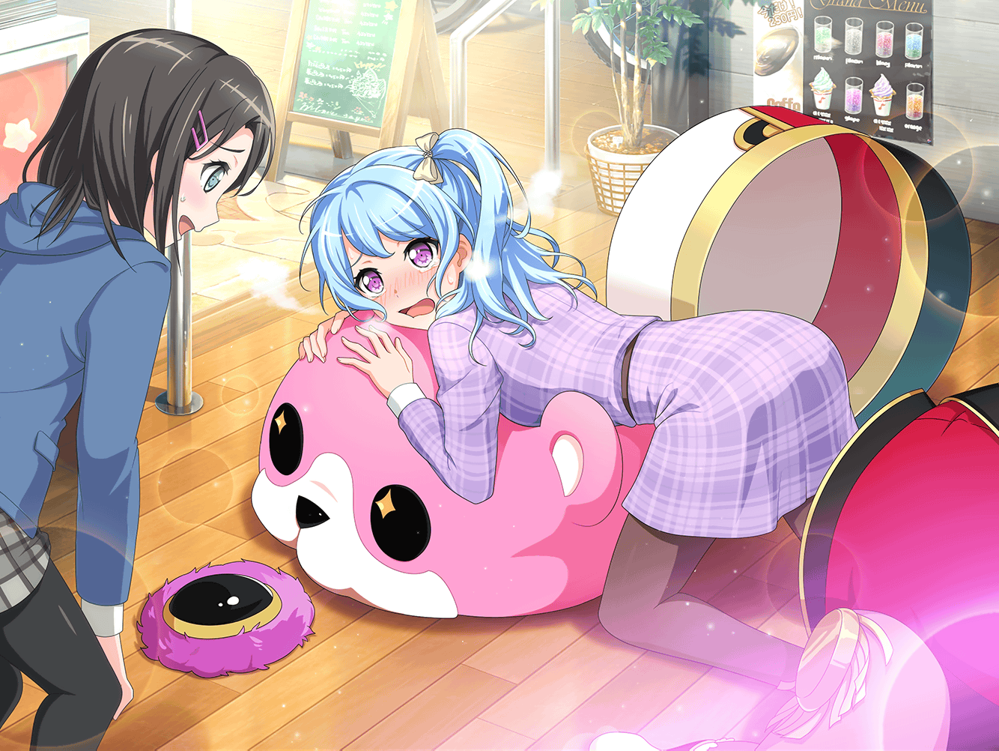

CiRCLE 受付
花音
美咲ちゃん、ここにいたんだね。
スタジオの中、探しちゃった
美咲
花音さん、どうしたんですか？
今日はもう練習終わりましたよね
花音
う、うん……ちょっと美咲ちゃんと話したくて。
ライブハウスにいると、この前のライブ思い出すね
美咲
この前のライブはなかなかハードスケジュールでしたね……
花音
でも、驚いちゃった。
美咲ちゃんが初めてライブしたいって言ったこと
美咲
自分でもらしくないって思ってます。
けど、ハロハピのことを実際に見てもいないのに、
思い込みだけで判断するのはもったいないなって……
美咲
それで気付いたら、身体が勝手に動いてました。
バタバタしている内に、
気付いたらライブまでやることに……
花音
美咲ちゃん少し変わったよね。
あ、もちろん良い方にだよ！
美咲
そうですかね？ 花音さんに言われると嬉しいです
美咲
こころやはぐみはそんなこと思ってなさそうですけどね～
花音
そんなことないと思うよ！
だって、美咲ちゃんがライブしたいって言った時、
みんな嬉しそうにしてたし！
美咲
あの時は、完全に勢い任せでした。
そのせいで、あんまりメンバーの顔とか見てなかったんですよね
花音
すごく真剣だったもんね。
ライブがやりたいって
美咲
今、思い返してみると……かなり恥ずかしいです
花音
それに、ライブが決まってから美咲ちゃん、
曲も作ってライブの準備もして、すごく忙しそうだよね
美咲
まあ、ライブは自分が言い出したことですしね
花音
私も、なにか美咲ちゃんのお手伝いができないかなあ？
美咲
具体的に手伝ってもらうことは……今はないですね
花音
そ、そんな……！
私、美咲ちゃんにはいつも苦労をかけてるから、
どんなことでもお手伝いさせてほしいの！
美咲
そう言われても……
今のところ忙しくはありますが、
大体なんとかなってますし
花音
うぅ……じゃ、じゃあ……！
私、ミッシェルに入るよ！
美咲
え、ええーーッッ！！
美咲
いやいや、やめた方がいいですよ。
多分、相当キツイですよ……
花音
へ、平気だよっ！
それに美咲ちゃんに少しでも楽になってもらえるのなら、
私頑張りたい！
美咲
うーん、花音さんがそこまで言うなら……試しに入ってみますか？
花音
うん！ 私、美咲ちゃんの代わりにミッシェルになる……！
美咲
多分、花音さんが考える以上にヤバいですよ、中……
花音
そうなのかな？
でも、とにかく挑戦してみないと……！
美咲
そうですね、まずは軽く入ってみますか。
キツかったら、すぐに言ってくださいね
花音
ありがとう、美咲ちゃん……
よいっしょ……こんな、感じかな……？
花音
あれ、前が少ししか見えない……それに、すごく暑い……
美咲
中、かなり蒸すので覚悟してください
花音
うぅ、美咲ちゃんの言うとおり、すごくあっつい……
それに上手く動けない……
花音
あ、あれ？ ……美咲ちゃん、どうしよう……！
どっちに進んでるか、分からないよ～
美咲
あ、花音さん！ そんなにフラフラすると危ないですよ！
花音
そ、そんなこと言われても、身体が勝手に……
花音
うぅぅっ……きゃぁっ……！
美咲
花音さん……！
花音
い……たたたっ……あっ……頭が取れちゃった……
美咲
花音さん怪我はないですか？
花音
私は大丈夫だよ。
着ぐるみに入ってたおかげかな？
それより、ミッシェルの頭どこかいっちゃった
美咲
着ぐるみ入らなければ、転ぶこともなかったんですけどね……
ミッシェルの頭は、すごい勢いで転がって行きましたけど、
見た感じなんともなさそうですよ
花音
そっか。良かった……ミッシェルの頭が壊れちゃったら、
きっとはぐみちゃんたちが悲しむよね
美咲
いやいや、花音さんは自分の身体を心配してくださいよ
はぐみ
おーい！ みーくん！
こころんと薫くんが呼んで……
ええ、かのちゃん先輩がミッシェルの中に！？！？
花音
え、えっと……これは……
美咲
すごい間の悪さだ……
はぐみ
かのちゃん先輩はかのちゃん先輩で、
ミッシェルもかのちゃん先輩で……
一体どういうことなの！！
花音
美咲ちゃん、どうしよう～！？
美咲
こうなったら……あれしかない！
美咲
…………つまり、そういうことだよ、はぐみ
花音
それって、薫さんの口癖……
はぐみ
つまり、そういう……つまり、そういうこと……
その言葉、誰かがいつも……
はぐみ
…………あ、そっか！ そうだよね。
よく分かんないけど、ミッシェルはかのちゃん先輩じゃない。
ミッシェルはミッシェルってことだよね！
美咲
うん、そうだよ。
……なんとかなったのかな
花音
美咲ちゃん、すごいね！
私、急なことだと、どうしたら良いのか分からなくなっちゃうよ
美咲
もう、だいぶ慣れましたからね。３バカの相手……
花音
あ、あはは……